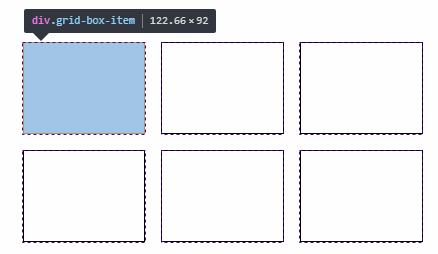

Grid Container: va a ser el elemento padre que va a tener puesto un nuevo
tipo de display: grid. Nos permite colocar otras propiedades para manipular
nuestro layaout.
Grid Item: Son nuestro componentes, contenido, lo que vamos a manejar.
Nuestras filas o columnas que
vamos a mover a nuestro gusto. Son hijos directos de grid.
Grid Line: Lineas divisorias horizontales y
verticales.
Grid Track: Espacio entre dos líneas adyacentes.
Filas y columnas.
Grid Cell: Celdas, espacio en dos filas adyacentes y
2 columnas adyacentes.
Grid Area: Espacio rodeado por 4 grid lines.
Cualquier cosa son cajas, cajas dentro de más cajas, css no tenía una especificación dedicada a crear
layout, se diferencia de flex en que flex esta diseñado para hacer algo en línea, no para elementos
dinámicos.
Para agregar la propiedad de grid al contenedor padre se emplea el siguiente código:
.container{
display: grid;
}
Para definir Columnas de contenido en nuestro layout debemos definir la propiedad grid-template-columns
seguido del qué tamaño serán el número de columnas que queremos. Su sintaxis es la siguiente:
grid-template-columns:n1 n2 n3 ... ;
.container{
display: grid;
grid-template-columns: 200px 200px 200px; /*3 columnas de 200px*/
}
grid-template-columns: 25% 50% 25%; /*2 columnas de 25% y 1 de 50%*/
Definiendo filas
Grid explicito (explicit grid) es cuando nosotros definimos el numero de
filas o columnas.
Grid implicito (implicit grid) es cuando tenemos filas o columnas que no
definimos pero son parte de nuestro grid.
Definiendo filas con grid layaout:
grid-template-rows: 300px 300px;
Para manejar filas y columnas en una sola línea de código:
La rejilla explícita es la red que defina con los grid-template-rows, grid-template-columns y
grid-template-areaspropiedades.
Sin embargo, aún puede tener elementos que no se ajusten a su cuadrícula explícitamente definida. Por
ejemplo, supongamos que define una cuadrícula que solo puede ajustarse a 6 elementos de cuadrícula, pero el
contenedor de cuadrícula en realidad contiene 9 elementos de cuadrícula. Solo 6 elementos cabrán en la
cuadrícula explícita, y 3 serán dejados. Aquí es donde entra la cuadrícula implícita.
La cuadrícula implícita es generada automáticamente por el contenedor de la cuadrícula cuando los elementos
de la cuadrícula se colocan fuera de la cuadrícula explícita. El contenedor de cuadrícula genera pistas de
cuadrícula implícitas agregando líneas de cuadrícula implícitas a la cuadrícula. Estas líneas junto con la
cuadrícula explícita forman la cuadrícula implícita.
Ver
más
Grids identados y tipos de displays
Display subgrid para heredar la configuración del grid padre (cuando se estén anidando grids). display: subgrid; (No disponible aún).
Display inline-grid muestra el grid en una sola linea: display: inline-grid; (No disponible aún).
Para hacer un subgrid, sensillamente hay que agregarle la propiedad grid a uno
de los hijos(grid item) del
contenedor padre(grid container).
Si queremos tener márgenes entre columnas y filas, una opción sería colocar márgenes en los extremos de
cada elemento, esto solucionaría el problema de una forma visual, pero esto puede traer problemas, como por
ejemplo nuestro grid-container se haría más pequeño.
Como grid soluciona esto, tiene propiedades para que estos márgenes ocurran tanto filas y columnas
Esa propiedad es grid-gap.
Para definir espaciado entre columnas grid-column-gap: valor;
Para definir espaciado entre filas grid-row-gap: valor;
Para decir esto en una sola línea de código: grid-gap: filas / columnas;
Notas: Gap es cuanto de espaciado queremos entre columnas. El gap no rompe
cómo
funciona el grid, ejemplo:
grid-column-gap: 30px;
grid-row-gap: 50px;
grid-gap: 30px; /*tanto columnas como filas*/
Con
margin Con
gap
Repetidores, unidades de medida y funciones
Unidad de medida: fracciones fr distribuye el espacio disponible tanto
vertical como horizontal en formas iguales.
En este ejemplo: tendremos 3 Columnas de 33,33..%
grid-template: 100px 100px 400px / 1fr 1fr 1fr; /*Las columnas se distribuyen con un mismo tamaño*/
¿Que sucede con el automatico?.
grid-template: 100px 100px 400px / auto auto auto;
En teoría debería hacer lo mismo que fr, pero el auto
distribuye el tamaño del elemento respecto al contenido que lleve dentro.
En
la columna 1 es mas ancha que el resto ya que en esa columna hay un elemento que tiene más elementos
adentro como es el caso de los sub-item.
Funciones
repeat(cantidad, valor) para usar el mismo valor varias veces. Para evitar
escribir lo mismo en los valores de ccs como por ejemplo 3 columas de 1fr
grid-template-columns: 1fr 1fr 1fr;
Podemos reemplazar con:
grid-template-columns:repeat(3, 1fr);
minmax(min, max) agregar un valor minimo y maximo para el tamaño al hacer
responsive valor mínimo y máximo que puede ocupar un elemento (columna) se puede combinar con la
función repeat
Para poder construir nuestro sitio con grid layout, hay que identificar cuantas colmunas
y cuantas filas
tenemos y apara cada área es decir header, left navigation, contenido, footer, etc., debemos especificar o
colocar como valor ese nombre dentro del atributo grid-template-area. En la
imagen anterior se puede observar que tenemos 3 filas y 2 columnas.
Si vamos a usar area en más de una columna colocamos el mismo donde del area donde la queramos. Ejemplo:
Nuestro header ocupara dos columnas, una fila tendrá dos columnas left
y contenido y el footer también
tendrá dos columnas. Además hay que especificar cuantas columas y filas son con en el
grid-template-columns y rows.
grid-template: repeat(3, 1fr) / repeat(2, 1fr);
En html:
Se le coloca una clase definida a cada elemento html, es decir, a los elementos html se le coloca el
nombre de la clase que se coloco en grid-template-area.
Para especificar qué área ocupara cada elemento lo hacemos por css con la propiedad grid-area
que se le
aplica a los hijos de container es decir a los grid-items.